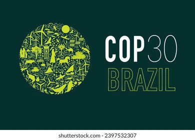

ENERGY FOREVER
COP 30°
A COP30 refere-se à 30ª Conferência das Partes da Convenção-Quadro das Nações Unidas sobre Mudança do Clima, a ser realizada em Belém, no estado do Pará, Brasil, entre os dias 10 e 21 de novembro de 2025. Esta é uma conferência anual de alto nível que reúne líderes mundiais para discutir ações relacionadas às mudanças climáticas e à transição para alternativas sustentáveis para a vida na Terra.
O Brasil foi formalmente confirmado como sede da COP30 durante a COP28, com anúncio feito pela Ministra do Meio Ambiente, Marina Silva. Esta será a primeira vez que a Amazônia sediará uma COP, trazendo à tona a importância de discutir preservação ambiental na maior floresta tropical do mundo. O governador do Pará, Helder Barbalho, ressaltou a relevância de debater a transição energética e apresentar a Amazônia á comunidade internacional durante a conferência.
A missão da COP30 é crucial, sendo necessário um compromisso significativo e audacioso para lidar com as mudanças climáticas. Alguns dos possíveis compromissos incluem a redução imediata das emissões de gases de efeito estufa, a diminuição imediata do desmatamento das florestas, o estabelecimento de inventários nacionais realistas de emissões, a execução dos compromissos financeiros assumidos anteriormente e tornar efetivo o Mecanismo Financeiro de Perdas e Danos. Estas ações são essenciais para enfrentar de forma eficaz os desafios climáticos globais.
Em resumo, a COP30 é uma conferência importante que reunirá líderes mundiais e diversas partes interessadas para discutir ações concretas para lidar com as mudanças climáticas e promover a sustentabilidade ambiental e energética.